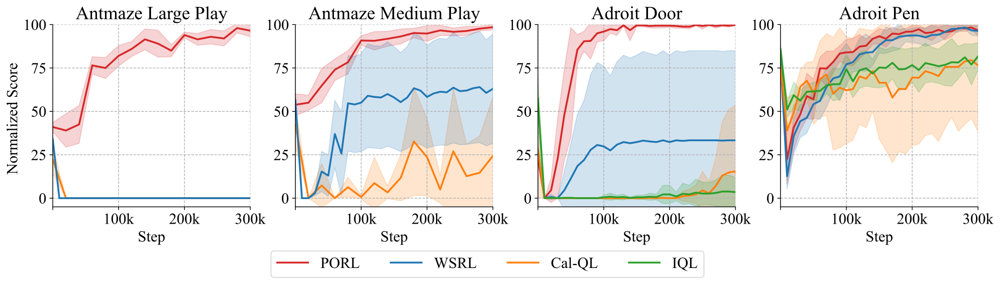
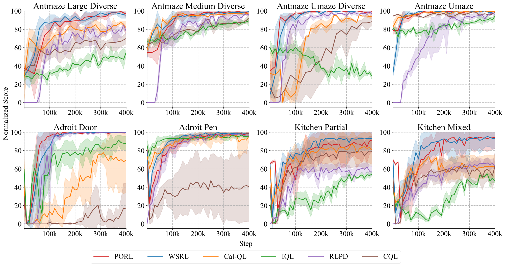
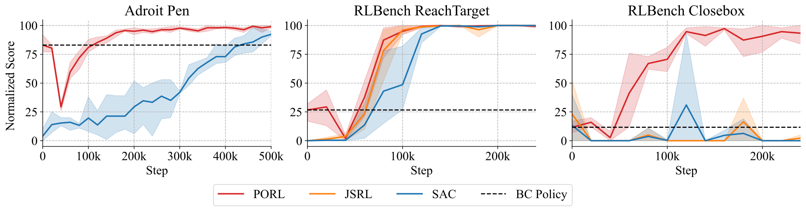

PORL · Preprint · 2025
Efficient Online RL Fine-Tuning with Offline Pre-trained Policy Only
Westlake University

A policy is a useful starting point
A pre-trained policy already knows something about the task. Online reinforcement learning should help it improve through interaction, even when the original training data and critic are no longer available. This is also the natural setting for behavior cloning, which produces a policy without a Q-function.
The critic makes this transition difficult. Updating a good policy against a randomly initialized critic can quickly undo what it has learned. Reusing an offline critic brings a different problem: its conservative value estimates can discourage the policy from exploring beyond the offline data.
PORL, short for Policy-Only Reinforcement Learning Fine-Tuning, gives the critic a head start. It learns a new Q-function online while holding the policy fixed, then uses that critic to guide policy improvement.
Warm up the critic, then fine-tune
- Start with the policy. Load a policy trained with offline RL or behavior cloning. Initialize a fresh critic and an empty online replay buffer.
- Collect data and train the critic. Freeze the policy during a short pre-sampling stage. Choose its action with probability 1 − ε and a random action with probability ε. Train the critic on these new transitions while leaving the policy unchanged.
- Improve the policy with online RL. Continue collecting interactions and update both the actor and critic with Soft Actor-Critic. The original policy now has a critic trained on the environment it is interacting with.
The experiments use ε = 0.1, an update-to-data ratio of 16, and an ensemble of 10 critics. Layer normalization and the ensemble help stabilize value estimates under frequent critic updates.
| Benchmark | Online steps before actor updates |
|---|---|
| AntMaze | 20,000 |
| Adroit | 5,000 |
| Kitchen | 20,000 |
| RLBench | 20,000 |
These steps count toward the online interaction budget. See Section 4 and Appendix 14.3 of the paper for the algorithm and full settings.
What the experiments show
We evaluate PORL on AntMaze, Adroit, and Kitchen from D4RL, together with RLBench manipulation tasks. The comparisons ask both how methods behave with only a policy available and how PORL compares with methods that can use additional offline artifacts.
Fine-tuning when only the policy is available
Methods that normally reuse an offline critic can struggle when initialized with the policy alone. PORL improves on these policy-only adaptations in the reported AntMaze and Adroit experiments, showing the value of training a suitable critic before changing the actor.

Competitive with richer starting points
Across the broader benchmark, PORL achieves competitive learning curves against offline-to-online and prior-assisted online RL methods. Those baselines may retain offline data, a pre-trained critic, or both; PORL uses only the pre-trained policy from the offline stage.

Starting from behavior cloning
PORL also directly fine-tunes behavior-cloned policies, which have no pre-trained critic to reuse. Experiments on Adroit Pen and RLBench ReachTarget and Closebox show improvement from BC initialization. Closebox illustrates a setting where PORL makes progress while the SAC and JSRL baselines remain low.

Where this applies
PORL assumes a useful pre-trained policy and access to an environment with reward feedback. It is less helpful when the starting policy is very weak. The paper studies MLP policies in simulation; extending the approach to diffusion or transformer policies and real-world online learning remains future work.
The full paper includes ablations on pre-sampling, critic update frequency, and initialization quality, as well as discussion of limitations in Appendices 8 and 12.
Citation
@misc{xiao2025efficientonlinerlfine,
title={Efficient Online RL Fine Tuning with Offline Pre-trained Policy Only},
author={Wei Xiao and Jiacheng Liu and Zifeng Zhuang and Runze Suo
and Shangke Lyu and Donglin Wang},
year={2025},
eprint={2505.16856},
archivePrefix={arXiv},
primaryClass={cs.LG},
url={https://arxiv.org/abs/2505.16856}
}